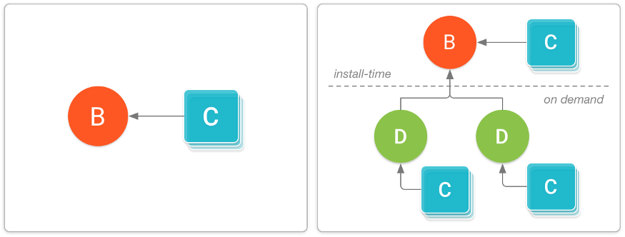

APK
APK - Android Application Package or Android Package Kit - the package file format used by the Android operating system for distribution and installation of mobile apps.
- The META-INF contains what is known as the manifest file. Think of this as the main file, which contains the file’s signature and the resources within the APK file.
- The Lib/ and Res/ files, which contain the native library and further resources, such as images, within the APK file.
- An AndroidManifest.xml file describes the name, version, and contents of an APK file.
- The classes.dex and resources.arsc files contain compiled Java classes and resources, like strings, to be run on your Android device.
APK files have their own folder. Simply locate the APK file you want to see and click it. APK files are stored in a .ZIP file, which compresses all the information within the APK file into a single file. This is used to save storage on your device. By clicking, or unzipping, the file, you’ll be able to view the contents within the file.
Dalvik is a discontinued process virtual machine in Google's Android operating system that executes applications written for Android.
Runtime - a system used by operating system which takes care of converting the code that you write in a high level language like Java to machine code and understand by CPU/Processor.
In Android Java classes converted into DEX bytecode. The DEX bytecode format is translated to native machine code via either ART or the Dalvik runtimes. Here DEX bytecode is independent of device architecture.
Difference between Dalvik and ART:
- ATR introduced in Android 4.4 and completely replaced Dalvik in Android 5.
- Android 7.0 adds a just-in-time (JIT) compiler with code profiling to Android runtime (ART) that constantly improves the performance of Android apps as they run.
- Dalvik used JIT (Just in time) compilation whereas ART uses AOT (Ahead of time) compilation.
- With the Dalvik JIT compiler, each time when the app is run, it dynamically translates a part of the Dalvik bytecode into machine code.Since JIT compiles only a part of the code, it has a smaller memory footprint and uses less physical space on the device.
- AOT - During the app’s installation phase, it statically translates the DEX bytecode into machine code and stores in the device’s storage. This is a one-time event which happens when the app is installed on the device. With no need for JIT compilation, the code executes much faster.
As ART runs app machine code directly (native execution), it doesn’t hit the CPU as hard as just-in-time code compiling on Dalvik. Because of less CPU usage results in less battery drain.
Why Android use Virtual Machine
- The application code is isolated from the core OS. So even if any code contains some malicious code won’t directly affect the system files.
- It provides cross compatibility or platform independency. It meaning even if an app is compiled on platform such as a PC, it can still be executed on the mobile platform using the virtual machine.
Android App Bundle
It is a new upload format that includes all your app’s compiled code and resources, but defers APK generation and signing to Google Play(with the .aab file extension).
Advantages:
- Dynamic Delivery - generate and serve optimized APKs for each user’s device configuration, so they download only the code and resources they need to run your app.
- No need to manually manage multiple APKs - For example, now you don’t have to create multiple APKs for devices with different screen resolutions.
- Dynamic Feature Module - These modules contain features and assets that you can decide not to include when users first download and install your app. Using the Play Core Library, your app can later request to download those modules as dynamic feature APKs.
- Reduced APK size - On average, apps published with app bundles are 20% smaller in size.
Split APKs are very similar to regular APKs — they include compiled DEX bytecode, resources, and an Android manifest. However, the Android platform is able to treat multiple installed split APKs as a single app.Types:
- Base APK : This APK contains code and resources that all other split APKs can access and provides the basic functionality for your app. When the user downloads the app, they always get this APK.
- Configuration APKs : Each of these APKs includes only native libraries and resources for a given device configuration — screen density, language or CPU architecture.
- Dynamic Feature APKs : Each of these APKs contain code and resources that are not required when your app is first installed, but may be downloaded and installed later.

AAR
In addition to JAR files, the Android also makes use of a binary distribution format called Android ARchive (AAR).
An AAR is similar to a JAR file, but it can contain both resources and compiled byte-code.
dependencies {
implementation 'GROUP_ID:ARTIFACT_ID:VERSION'
}
The structure of the AAR file is as follows-
- /AndroidManifest.xml (mandatory)
- /classes.jar (mandatory)
- /res/ (mandatory)
- /R.txt (mandatory)
- /assets/ (optional)
- /libs/*.jar (optional)
- /jni/<abi>/*.so (optional)
- /proguard.txt (optional)
- /lint.jar (optional)